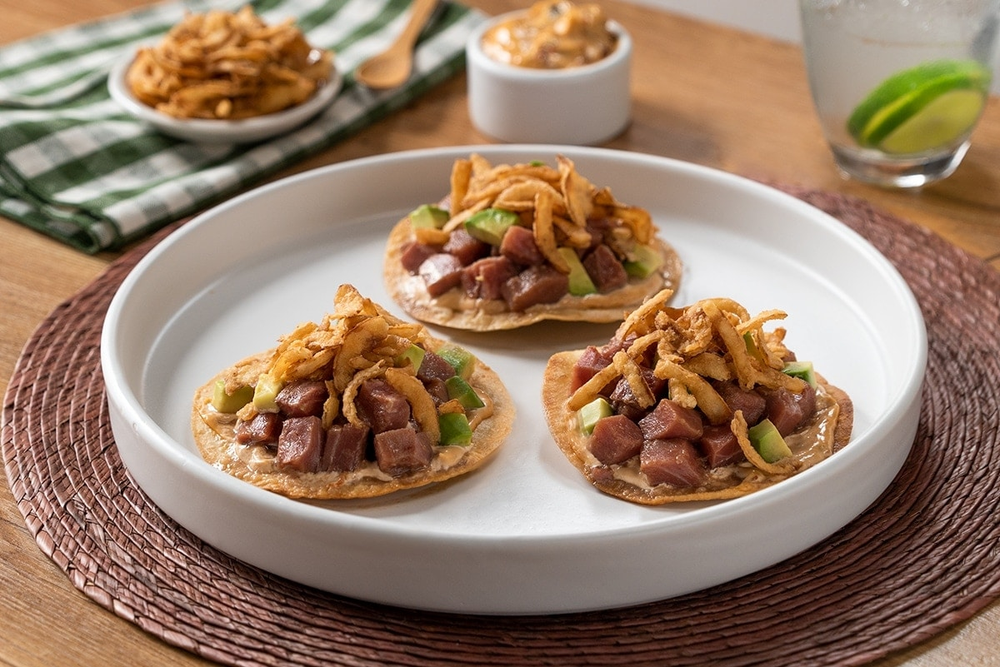

Tostadas de Atún

Ingredientes:
| Ingrediente |
Cantidad |
| Aceite Vegetal |
1 lto. |
| Tortilla |
6 |
| Mayonesa |
1/2 taza |
| Chipotle Molido |
3 Cucharadas |
| Sal |
Al Gusto |
| Pimienta |
Al Gusto |
| Jugo de naranja |
3 cucharadas |
| Aguacate |
1/2 |
Preparación:
♦ Sobre una tabla corta el
atún en cubos pequeños. Reserva.
♦ Fríe las
tortillas por 3 minutos para hacer las tostadas, escurre en papel absorbente y reserva.
♦ En un bowl mezcla la
mayonesa con el
chipotle molido, la
sal y la
pimienta.
♦ Mezcla en un bowl la
salsa soya con el
jugo de naranja y el
jugo de limón.
♦ Marina el
atún con la
salsa soya preparada por 5 minutos. Cuela y reserva.
♦ Unta las tostadas con la
mayonesa chipotle, agrega el
atún y el
aguacate.
♦ Sirve y disfruta.